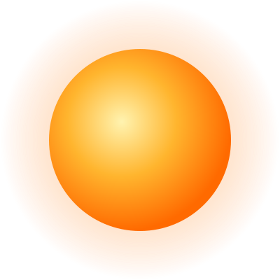
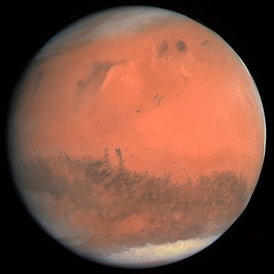
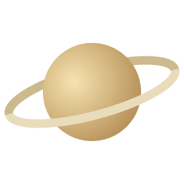

Terra
O único planeta conhecido com vida. Cerca de 71% da superfície está coberta por água.
Saber mais na NASA ↗Astronomia para curiosos
O Sistema Solar formou-se há cerca de 4,6 mil milhões de anos. No centro está o Sol e, à sua volta, giram oito planetas, centenas de luas e milhões de asteroides e cometas.
Explorar os planetas
Dois planetas rochosos e dois gigantes gasosos. Repara como as diferenças de tamanho são enormes!
O único planeta conhecido com vida. Cerca de 71% da superfície está coberta por água.
Saber mais na NASA ↗
O planeta vermelho. Tem o maior vulcão do Sistema Solar: o Olympus Mons.
Ver página de Marte →

Famoso pelos anéis, feitos de gelo e rocha. É tão pouco denso que flutuaria em água.
Saber mais na NASA ↗Organizamos noites de observação gratuitas. Inscreve-te e traz a família.
Inscrever-meA luz do Sol demora cerca de 8 minutos e 20 segundos a chegar à Terra.
— Curiosidade astronómica